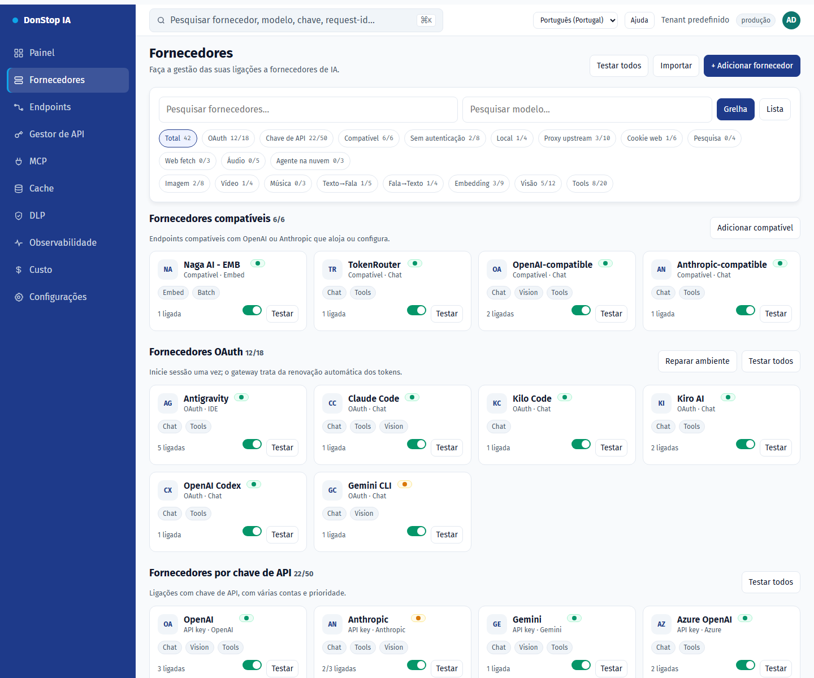
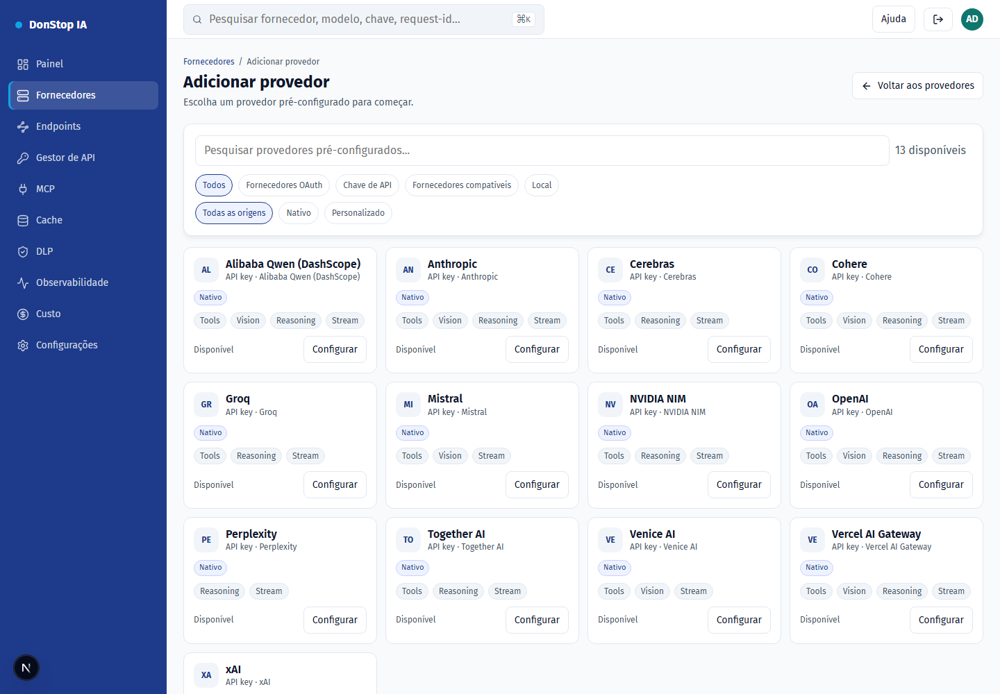
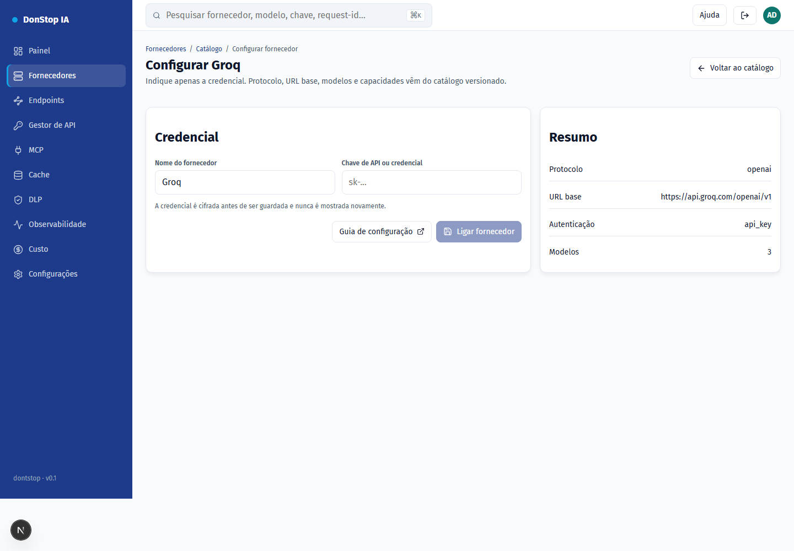
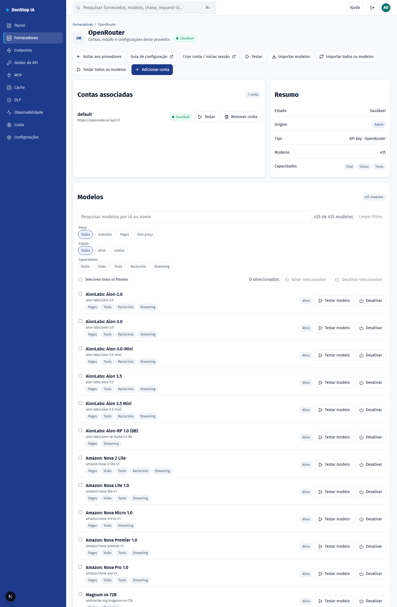

Configuração de fornecedores

Cada fornecedor abaixo já está no catálogo versionado: protocolo, URL base, modelos e capacidades. Indique apenas a credencial.
Como configurar
- Abra Fornecedores e escolha Adicionar fornecedor (ou o cartão no catálogo).
- Selecione o fornecedor e clique em Configurar.
- Crie a API key na consola do fornecedor (link abaixo).
- Cole a chave no campo Credencial e confirme.
- O fornecedor passa para a lista de configurados; teste e importe modelos se necessário.
Passo a passo



Fornecedores suportados
| Provider | Auth | Base URL |
|---|---|---|
| Alibaba Qwen (DashScope) | API key | https://dashscope-intl.aliyuncs.com/compatible-mode/v1 |
| Anthropic | API key | https://api.anthropic.com |
| Cerebras | API key | https://api.cerebras.ai/v1 |
| Cohere | API key | https://api.cohere.com/compatibility/v1 |
| Groq | API key | https://api.groq.com/openai/v1 |
| Mistral | API key | https://api.mistral.ai/v1 |
| NVIDIA NIM | API key | https://integrate.api.nvidia.com/v1 |
| OpenAI | API key | https://api.openai.com/v1 |
| OpenRouter | API key | https://openrouter.ai/api/v1 |
| Perplexity | API key | https://api.perplexity.ai |
| Together AI | API key | https://api.together.xyz/v1 |
| Venice AI | API key | https://api.venice.ai/api/v1 |
| Vercel AI Gateway | API key | https://ai-gateway.vercel.sh/v1 |
| xAI | API key | https://api.x.ai/v1 |
Alibaba Qwen (DashScope)
- Auth: API key
- Base URL: https://dashscope-intl.aliyuncs.com/compatible-mode/v1
- Crie a chave no Alibaba Cloud Model Studio (DashScope) e use o endpoint internacional.
Anthropic
- Auth: API key
- Base URL: https://api.anthropic.com
- O gateway envia x-api-key e anthropic-version; não inclua esses headers manualmente.
Cerebras
- Auth: API key
- Base URL: https://api.cerebras.ai/v1
- Compatível com OpenAI; use a chave do console da Cerebras.
Cohere
- Auth: API key
- Base URL: https://api.cohere.com/compatibility/v1
- Use o endpoint de compatibilidade (/compatibility) e a chave do dashboard da Cohere.
Groq
- Auth: API key
- Base URL: https://api.groq.com/openai/v1
- Compatível com OpenAI; a chave é criada no console da Groq.
Mistral
- Auth: API key
- Base URL: https://api.mistral.ai/v1
- Compatível com OpenAI; use a chave do console da Mistral.
NVIDIA NIM
- Auth: API key
- Base URL: https://integrate.api.nvidia.com/v1
- O endpoint de modelos é público; a credencial é exigida nas inferências.
OpenAI
- Auth: API key
- Base URL: https://api.openai.com/v1
- Use uma chave de projeto. A organizaão/projeto não são enviados pelo gateway.
OpenRouter
- Auth: API key
- Base URL: https://openrouter.ai/api/v1
- Importe modelos pelo botão Importar modelos ou use o modelo auto.
Perplexity
- Auth: API key
- Base URL: https://api.perplexity.ai
- Perplexity não expõe /models: o teste e a importação de modelos ficam indisponíveis; o chat funciona.
Together AI
- Auth: API key
- Base URL: https://api.together.xyz/v1
- Compatível com OpenAI; use a chave em api.together.ai.
Venice AI
- Auth: API key
- Base URL: https://api.venice.ai/api/v1
- Compatível com OpenAI; a chave é criada em Settings > API.
Vercel AI Gateway
- Auth: API key
- Base URL: https://ai-gateway.vercel.sh/v1
- Os IDs de modelo são namespaced (ex.: openai/gpt-4.1).
xAI
- Auth: API key
- Base URL: https://api.x.ai/v1
- Use a chave do console da xAI; o gateway usa o endpoint de chat.
Filtros e ações em lote
- Filtre por preço (gratuitos/pagos/sem preço), capacidades (áudio, visão, tools, reasoning, streaming), estado ou texto.
- Selecione todos os modelos filtrados e ative ou desative de uma vez; a aplicação confirma a quantidade e reporta cada falha.
- Os filtros usam metadados do fornecedor; modelos sem metadados aparecem como "sem metadados" e não são inferidos pelo nome.
Modelos
- Sincronizar modelos importa tudo o que o fornecedor anuncia e preserva o estado ligado/desligado dos modelos existentes.
- Testar modelo envia um pedido mínimo para validar a credencial e a disponibilidade.
- Ativar/Desativar define se o modelo aparece em
/v1/modelse recebe tráfego. - Testar todos os modelos coloca todos os modelos configurados em fila e executa os testes em segundo plano, um de cada vez.
- Importar todos os modelos regista tudo o que o fornecedor anuncia num clique.
Campos
| Field | Description |
|---|---|
| Credencial | API key criada na consola do fornecedor. É cifrada antes de ser guardada. |
| Nome do fornecedor | Rótulo opcional para esta instância. |
| URL base | Substituição opcional; vazio usa o padrão do catálogo. |
Erros comuns
- 401: chave inválida ou expirada. Crie outra e tente novamente.
- 402: a conta do fornecedor está sem crédito.
- 429: limite de taxa do fornecedor. Aguarde o cooldown.
- Fornecedor fora do catálogo: ainda não existe adaptador no gateway.